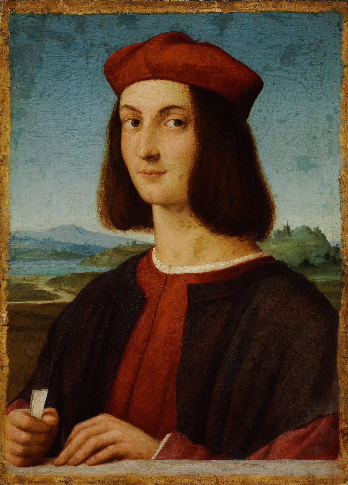
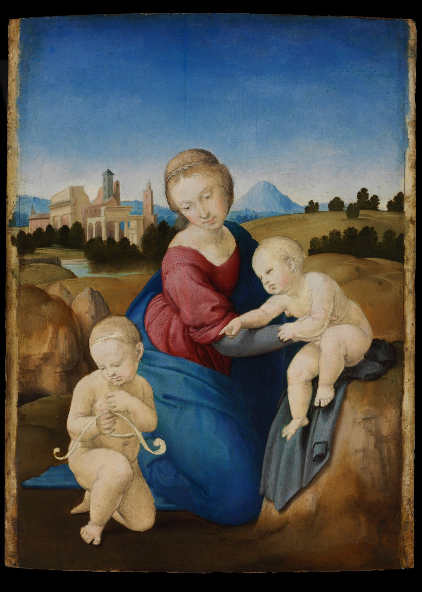

Hét festmény, egy éjszaka: ki rabolta ki a Szépművészetit 1983-ban?
A Szépművészeti 1983-as kirablását az évszázad magyarországi bűntényének nevezték. A tetteseket elítélték, a képek hazatértek, a megbízó kilétét viszont nem bizonyították.

1983. november 6-án reggel hatkor kezdődött a helyszíni szemle a budapesti Szépművészeti Múzeumban. Az ablak előtti erkélyen a nyomozók három üres keretet találtak, egy borotvapengét és kötéldarabokat piros-fehér-zöld vezetőszállal. Ott maradt egy csavarhúzó is, rajta a felirat: Parana USA.
Egyetlen éjszaka alatt hét festmény tűnt el a múzeumból, köztük két Raffaello. Akkori becslés szerint közel másfél milliárd forintot értek, a korabeli sajtó az évszázad magyarországi bűntényének nevezte a rablást. A tetteseket ma már ismerjük: öt olasz, két magyar segítővel. A megbízó kilétét viszont nem bizonyították.
Kezdjük az épülettel. A múzeum hátsó homlokzatát 1982 óta tatarozták, és az Állatkert felé néző oldalon az állvány a felső ablakokig ért. Az egyik infraérzékelő 1983 augusztusában elromlott. Az ideiglenes riasztó november 1-jén mondta fel a szolgálatot.
November 5-én, szombat este három őr járta végig a termeket, nyolc órától nagyjából kilencig, és minden rendben volt. Fél tizenegykor hárman másztak fel az állványon az Állatkerti körút felől: két olasz és az egyik magyar segítőjük. Az egyik olasz kivágott egy darabot az ablaküvegből, közben megvágta a kezét, és levette a kesztyűjét. Ellenőrizte, szól-e a riasztó. Nem szólt.
Odabent leemelték a képeket, kihordták az erkélyre, és ott kiszerelték őket a díszkeretekből. Éjfélkor az őrök újabb kört tettek. Hét kép hiányzott: két Raffaello, köztük az Esterházy-madonna, két Tintoretto, két Tiepolo és a Giorgione képmása című portré. A tolvajok addigra már messze jártak. Az éjféli felfedezést a magyar források egybehangzóan írják, az olasz Wikipédia szerint viszont a rablást csak hétfő reggel vették észre. Egy nyomkövető kutya a Gundel étterem parkolójáig vitte a szagot, és ott vége lett a nyomnak.
A Duna és a határnyilvántartás
A közvélemény másnap este, a televízió A Hét című műsorából tudta meg, mi történt. Jelentkezett egy zsaroló is, hatmillió forintot kért a képekért, de ez zsákutcának bizonyult. November 10-én viszont a Duna adott vissza valamit: Százhalombattán, a hőerőmű zsilipjénél partra került egy zsák. Benne voltak a képek vakkereteinek lécei, egy üvegvágó és egy acéllemez, valószínűleg a Madonna hátlapja. A zsák olasz volt, állati takarmányt csomagoltak benne. A csavarhúzó szintén olasz gyártmány volt, csak a felirata hatott amerikainak.
A nyomozók kezére ezután a korszak egyik sajátossága játszott. Olasz állampolgár akkor csak vízummal léphetett be Magyarországra, és minden határátlépést központilag rögzítettek. A nyomozók összegyűjtötték a november első tíz napjában az országban járt több ezer olasz adatait, és november 23-ára ötven gyanús név maradt. Az olasz rendőrségnek már volt műkincsvédelmi osztálya, és a római Interpol-iroda is segített.
A tolvajok neve megvolt, a képeknek nyoma sem volt.
Ujjlenyomatot az ablakon, az üvegcserepeken és a kereteken is találtak. December 2-án megjött Rómából a válasz: a nyomok egy akkor már büntetett előéletű olasz férfié. Csakhogy az olaszok már november 6-án elhagyták az országot, hárman autóval Letenyénél, ketten vonattal Hegyeshalomnál. A tolvajok neve megvolt, a képeknek nyoma sem volt.
Egy notesz és a törökbálinti föld
A következő nyomot egy eltűnt lány hozta. November 9-én eltűnt egy olaszul beszélő kiskorú magyar lány, az útlevelével együtt. Egy olasz ismerőse után utazott Romániába. December 5-én a biharkeresztesi határátkelőn találták meg, Bukarestből jött vissza vonattal. Nála volt egy notesz, benne egy monogram és egy telefonszám. A banda a képeket „tubák”-ként emlegette, egy noteszbejegyzésben is így szerepeltek.
A szál két magyar férfihoz vezetett, a banda helyi segítőihez. Tízezer dollárt ígértek nekik: a magyar Wikipédia szerint összesen, a Telex szerint fejenként. December 15-én mindkettőjüket őrizetbe vették. Az egyik négyórás kihallgatás után vallott, a másik 33 napig tagadott. Aki vallott, kivitte a nyomozókat Törökbálintra, ahol nejlonzacskóban, a földben ott volt Raffaello Ifjú képmása. Ez a kép maradt biztosítéknak a két magyarnál, amíg meg nem kapják a pénzüket. A sajtó erről csak január 14-én értesült.

A másik hat kép, köztük az Esterházy-madonna, több mint két hónappal a betörés után sem került elő.
A feltekert vásznak legendája
Néhol az olvasható, hogy a tolvajok kivágták és feltekerték a vásznakat. Az Esterházy-madonna azonban nem vászon. Fatábla, 28,5 centiméter magas és 21,5 széles, nagyjából akkora, mint egy A4-es lap. Fatáblát nem lehet feltekerni. A tolvajok kiszerelték a képeket a keretükből.
Ezt a kis táblát 1720-ban XI. Kelemen pápa ajándékozta a császári párnak, 1983-ban pedig egymagában húszmillió dollárra becsülték.
Fatáblát nem lehet feltekerni.

A zöld bőrönd
1984. január 20-án, hajnali négykor megszólalt a telefon az aigioni görög csendőrőrsön. A hívó nem mondta meg a nevét, csak azt, hogy nézzék meg a Panagia Trypiti kolostort. A kolostor kertjében megtalálták a zöld bőröndöt, benne mind a hat hiányzó festményt. Az angol Wikipédia ezt másképp tudja: szerinte az olasz Carabinieri találta meg a képeket.
A vallomásokból és a tettesek későbbi beszámolóiból összeállt az út. A betörés után a banda egy Labanc utcai albérletbe vitte a képeket. Ott a vakkereteket is leszedték, a léceket az üvegvágóval együtt zsákban a Dunába dobták, ezt a zsákot fogták ki Százhalombattánál. A Telex szerint az egyik olaszt azért vették be a bandába, mert nem volt priusza, és az ő Fiat Ritmójába rejtve vittek ki hat képet az országból; a We Love Budapest egy Ladát és egy Fiatot említ. Aki vitte őket, a magyar Wikipédia szerint november 7-én Görögországban továbbadta a festményeket, az olasz Wikipédia szerint aznap már ott járt. A hat kép január végén a Malév különgépével repült haza: a Telex és a 444 január 23-át ír, a magyar Wikipédia 25-ét.
1984. március elejére mind az öt olasz őrizetben volt, az egyes letartóztatások dátuma forrásonként változik. Olasz bíróság elé akartak állni, mert ott enyhébb ítéletre számítottak, és egyes források szerint volt, aki maga jelentkezett a rendőrségen. Rómában négy és fél, illetve négy év kilenc hónap börtönt kaptak. A két magyar segítőt jogerősen tizenkét, illetve hét évre ítélték. Az itthoni bíróság jogerős indoklása a Telex összefoglalása szerint kiemelte, hogy a tettesek nemzeti értékeinkben szinte felmérhetetlen kárt okoztak.
Ami nyitva maradt
És a megbízó? Ez máig nyitott kérdés. Görögországban egy üzletembert bíróság elé állítottak, de felmentették. Az egyik elítélt olasz évtizedekkel később azt állította, hogy a képeknek New Yorkba kellett volna jutniuk. Hogy kinek, azt nem bizonyították, és azt sem tudni, ki tette a bőröndöt a kolostor kertjébe.
Ugyanez az elítélt egy 2015-ös újságinterjúban azt állította, hogy a csavarhúzót szándékosan hagyták ott, hogy az amerikaiakra tereljék a gyanút. Ez egy elítélt tettes utólagos állítása, a Népszava interjúját a Telex idézi, az eredetit nem olvastuk. Ha így volt, nem jött be: a szerszám olasz volt, és a nyomozók az olaszokat kezdték keresni.
A rablást az Esterházy-madonna is megsínylette: a fatábla rázkódás és ütés hatására függőlegesen megrepedt, a restaurálásához külön prést készítettek. A múzeum főigazgatója, Garas Klára, 1984-ben távozott a posztjáról. A 444 szerint februárban felmentették, a Telex szerint fegyelmi után bocsátották el, és áprilisban kérte a nyugdíjazását. Az ügyből 1985-ben játékfilm lett, Képvadászok címmel, 2019-ben pedig dokumentumfilm.
Garas Klára egy 2014-es MTVA-portréban, ahogy a Telex idézi, így foglalta össze a történetet: „Azt hiszem, én vagyok a világon az egyetlen, akitől egyszerre két Raffaellót is elloptak.”
 Videón is megnézhetedHét festmény, egy éjszaka: ki rabolta ki a Szépművészetit 1983-ban?
Videón is megnézhetedHét festmény, egy éjszaka: ki rabolta ki a Szépművészetit 1983-ban?
Források
- Wikipédia: 1983-as képlopás a Szépművészeti Múzeumban (fő forrása Zombori Attila: Képes könyv, BM Könyvkiadó, 1984)
- Stöckert Gábor: A nők és az étel miatt jöttek Magyarországra, aztán elkövették az évszázad bűntényét. Telex, 2023. november 5.
- György Sándor: Képtelen képrablás magyar módra. 444, 2017
- Szépművészeti Múzeum, gyűjteményi adatlap: Raffaello, Esterházy-madonna (ltsz. 71)
- Wikipédia (olasz): Operazione Budapest
- Wikipédia (angol): Esterházy Madonna
- Így zajlott az évszázad hazai műkincsrablása. We Love Budapest, 2024. november 30.
- Új részletek derültek ki az igazgatónő fegyelmijéről és távozásáról. Index, 2024. augusztus 30.
A cikk a videó állítástáblájára épül, és külön tény-, nyelvi és jogi bírálaton ment át. Hogyan ellenőrzünk?
Hibát találtál? Írd meg nekünk, megnézzük.